Think further with every source.
Read straight through the first time; after that, jump.
A research workspace where every answer comes from material you chose.
Deeper Notebook is a native desktop application for source-grounded research. You collect documents, audio, video, and web pages into notebooks. The application reads them, breaks them into passages, and indexes those passages. From then on, everything it produces — chat replies, syntheses, study guides, podcast scripts, slide decks — is drawn from your material and cites the passage it came from.
Two things make it different from a web research assistant:
Anyone who needs to work through a body of material and be able to answer "where did that come from?" — researchers, students, analysts, writers, and people preparing to teach something they have just learned.
One drag, one right-click, then about a minute and a half of setup.
Deeper-Notebook-mac-<arch>.dmg from the Releases page.The first launch does real work before it shows you anything, and it is slower than every launch after it. In order, it:
Budget roughly 90 seconds the first time. Later launches skip the unpacking and the downloads. If a launch feels slow, §26 shows you where the time went.
Deeper-Notebook-windows-x64.zip and a Setup-x64.exe installer. The
screenshots in this guide are from macOS; the interface is the same.
On a fresh profile the app opens a short wizard. You can accept every default and change your mind later — nothing there is permanent. The two questions worth answering deliberately:
Four regions. Learn them once and every screen reads the same way.
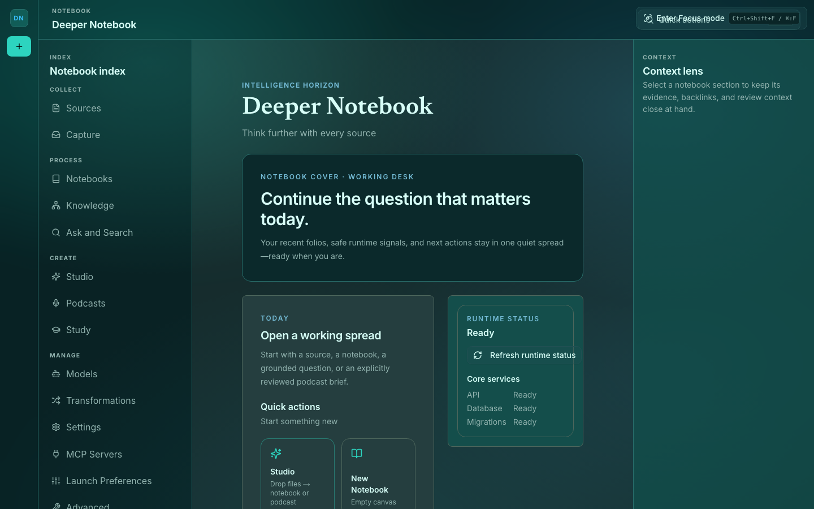
Your badge, and a + button that starts something new from wherever you are — a notebook, a source, a note.
Grouped by what you are doing, not by data type:
| Group | Contains | Use it when |
|---|---|---|
| Collect | Sources, Capture | You are gathering material |
| Process | Notebooks, Knowledge, Ask and Search | You are working through it |
| Create | Studio, Podcasts, Study | You are producing something from it |
| Manage | Models, Transformations, Settings, MCP Servers, Launch Preferences, Advanced | You are configuring the app |
Whatever you selected. In a notebook this splits into three resizable panes — sources │ notes │ chat — and remembers the widths you set.
A running summary of what is in play: the evidence behind the current view, backlinks, and what the assistant currently has in context. When you are unsure why an answer said what it said, look here first.
Where you left off, and whether the machinery is healthy.
Home is deliberately quiet. It shows three things:
| Reads | Means | Do |
|---|---|---|
| Ready | Everything answered its health check | Nothing |
| Starting | A service is still coming up — normal for the first minute | Wait |
| Degraded | Something optional did not start — often a local model | Open Settings → Local models and check which one |
Degraded is not broken. The application is designed so an optional service failing never stops you working — it removes a capability, tells you, and carries on. If your chat model is the thing that is degraded, you will get an explicit message rather than a silent hang.
Use Refresh runtime status after you start or stop a model; the panel does not poll aggressively, on purpose.
If a launch felt slow, the app records how long each stage took and surfaces any stage over a tenth of a second. You do not need to open a log file to find out that model loading, not the database, was what you waited for.
A notebook is a question and the material that answers it.
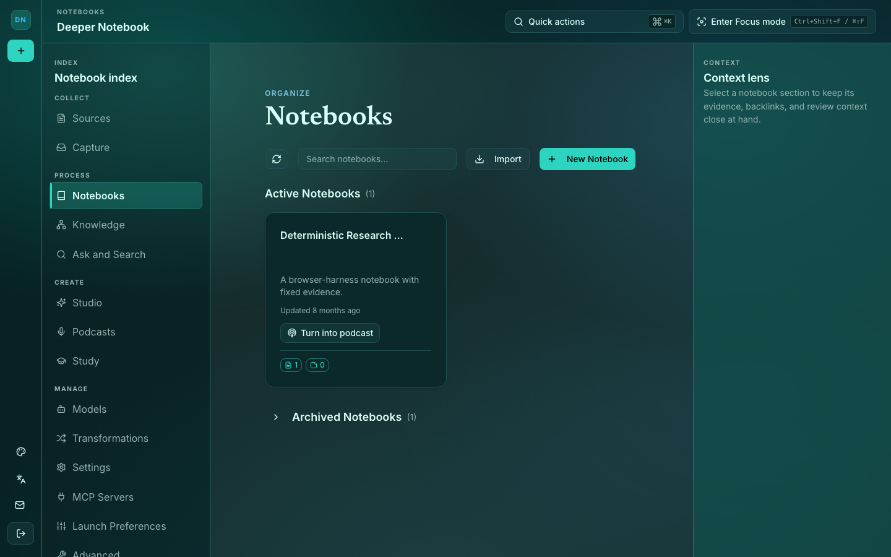
Archive hides a notebook from the index without touching anything inside it. Delete is permanent and cascades: sources, notes, the passage index, and the chat sessions all go with it.
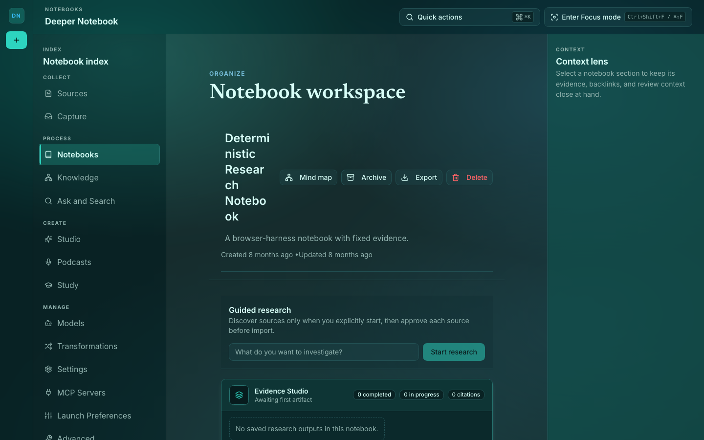
Four actions live in the header:
| Action | What it does |
|---|---|
| Mind map | Opens a graph of this notebook and everything related to it (§10) |
| Archive | Hides it from the index; fully reversible |
| Export | Writes the notebook and its notes out as Markdown |
| Delete | Permanent, and cascades to everything inside |
Type what you want to investigate and press Start research. The app searches, shows you candidate sources, and waits for you to approve each one before importing it. Nothing is added to your notebook without you clicking. This is deliberate — an unattended importer would quietly fill your notebook with material you never read.
Everything the application knows, it knows because you added it here.
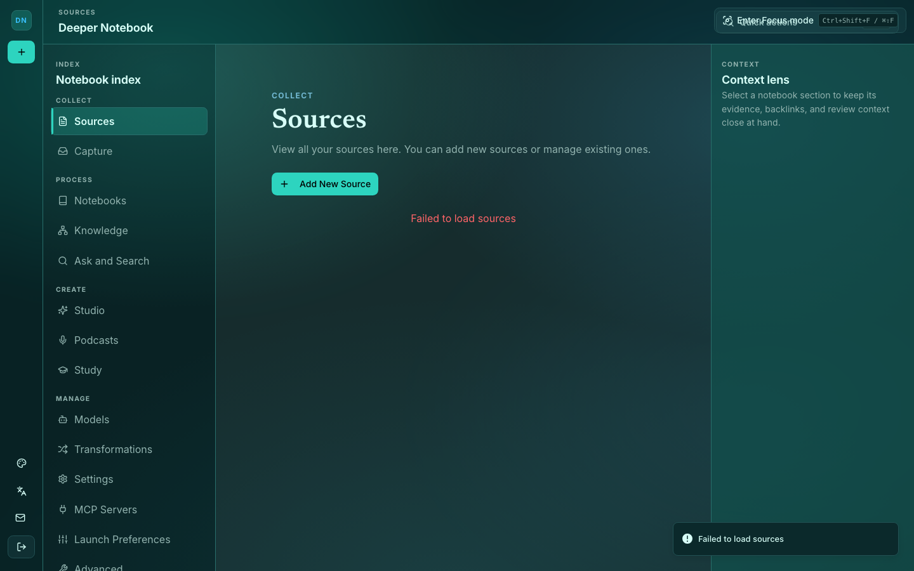
| Kind | Formats | How it is read |
|---|---|---|
| Documents | PDF, DOCX, PPTX, XLSX, Markdown, plain text | Text extraction, 50+ formats supported |
| Audio | MP3, WAV, M4A and similar | Transcribed by a local speech-to-text model |
| Video | MP4, MOV and similar | Audio track transcribed; frames used for the cover |
| Web pages | Any URL | Fetched and cleaned; dynamic pages rendered if the optional engine is installed |
| Raw text | Pasted | Used directly |
Inside the Sources panel, Discover searches the web for a topic, shows you the candidate pages, and lets you add the ones you want as link sources. This only reaches the network if a search provider is available — and one always is, because Wikipedia needs no key. Configure a better provider in Settings if you want broader results (§17).
Two optional switches in Settings → Sources, both off by default:
Both cost a model call per source. Turn them on when you are adding a lot of material you will need to skim later; leave them off when you are adding a handful of things you will read yourself.
The reading pane is also where citations land.
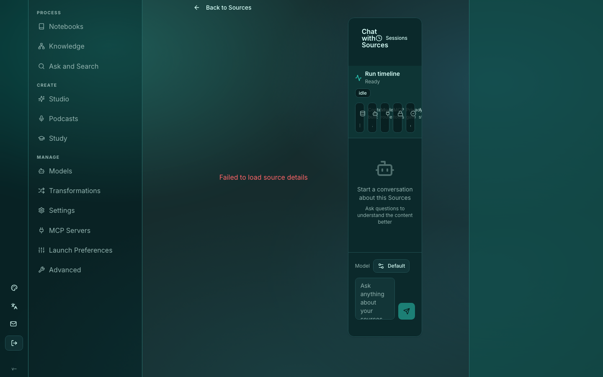
Each source has three settings that decide what notebook-wide chat may use:
| Setting | The assistant sees | Use when |
|---|---|---|
| Off | Nothing from this source | It is off-topic, outdated, or you are testing what a subset says |
| Insights only | Summaries and extracted points, not the full text | The source is long and you want its conclusions without spending context on it |
| Full | The whole indexed document | Normal — this is the default |
This is how you conduct an argument with your own library: turn one side off and ask the same question again.
When a chat answer shows a citation pill, clicking it opens that source here and scrolls to the exact passage, highlighted. This turns a citation from a reference you have to trust into a claim you can check in one click.
The centre of the application. Everything else feeds it.
Chat lives in the right pane of a notebook. Ask a question and the application does five things before the model ever sees your message:
| Tool | What it does | Needs |
|---|---|---|
| Web search | Searches the live web and cites what it found | Nothing — Wikipedia is always available. A provider key gives better results |
| Scholarly search | Searches OpenAlex and arXiv for papers | Nothing |
| Add web source | Turns a page it found into a permanent source in your notebook | Nothing |
| MCP servers | Anything you connect (§20) | Configuration |
The picker row above the input turns individual tools off for a conversation. Turn web search off when you want an answer strictly from your own library.
The application extracts durable facts and preferences from your conversations and recalls them later — so you do not re-explain your project every session. It is bounded on purpose: it keeps a capped number of items, only stores things it is reasonably confident about, and sanitises what it stores so text inside a source cannot instruct it. Memory settings live in Settings.
The Debate toggle above the chat input, next to the tool picker, changes how the model responds to your next message — not what it can see. With it on, the assistant argues the opposing position: it steelmans the case against your claim, concedes when your sources genuinely support you rather than manufacturing disagreement, and still cites every assertion back to your sources exactly as it does in standard chat. It is a good way to stress-test a conclusion before you commit to it in writing.
The toggle is per-turn, not a setting — it does not persist across a new session, and it does not change retrieval or which sources are in context, only the stance the model is asked to take.
Two different questions, two different tools.
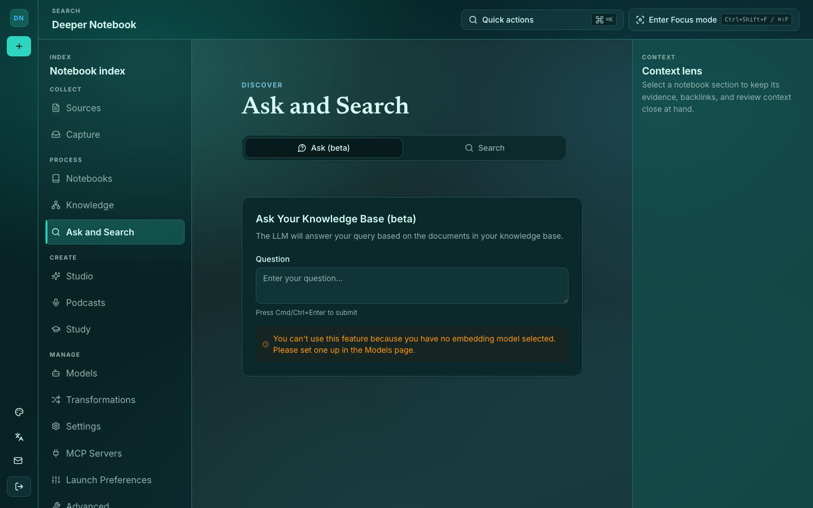
| Search | Ask | |
|---|---|---|
| Answers | "Where did I read about X?" | "What does everything I have say about X?" |
| Returns | Ranked passages | One synthesised, cited answer |
| Scope | Your whole library | The notebook |
| Cost | Instant, no model call | A model call |
Search matches on meaning, not just words — a passage about "resting heart rate declining" will come back for "cardiovascular adaptation" even with no shared vocabulary.
Ask declines. If your sources do not support a grounded answer, Ask says so instead of producing a plausible synthesis from nothing. Treat a declined Ask as information: it is telling you your library has a gap.
Your library as a structure rather than a list.
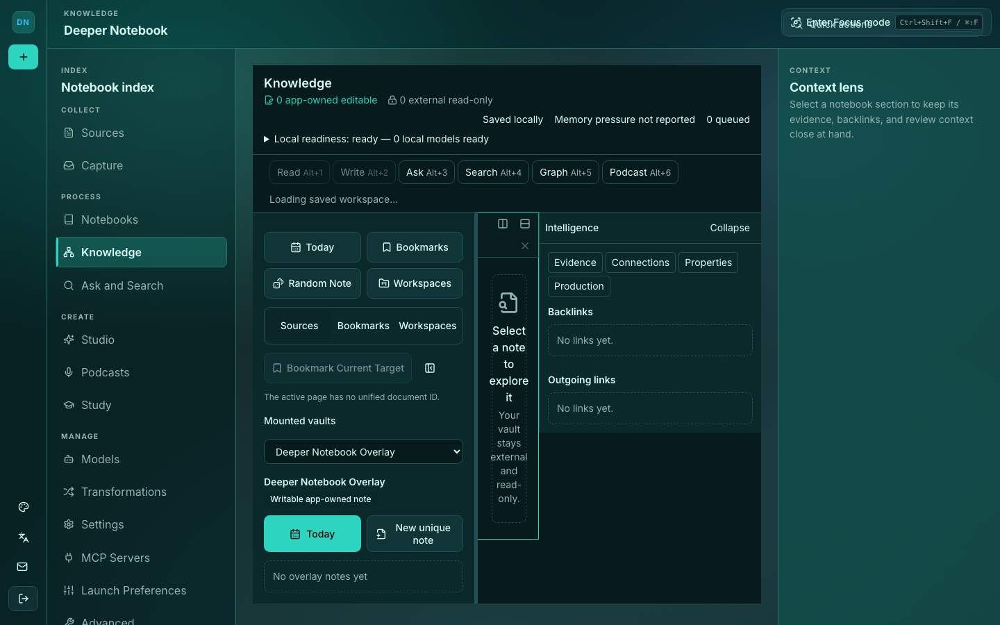
Knowledge projects your material as documents, blocks within them, and the relations that connect them. It is where you go when you want to see how things sit together rather than read one thing.
From any notebook header, Mind map draws a radial graph: the notebook at the centre, its sources and notes around it. Click a node to open it. The graph is built from relations that already exist in your data — it is a view, not a separate thing you have to maintain.
If you keep a Markdown vault — Obsidian, Logseq, or plain folders of Markdown — Deeper Notebook can watch it and keep your notes in step. Notes you write in the app appear as files; files you write outside appear as notes. The first pass over a large vault is proportional to its size; after that it watches for changes.
Turn a notebook into something you can hand to someone.
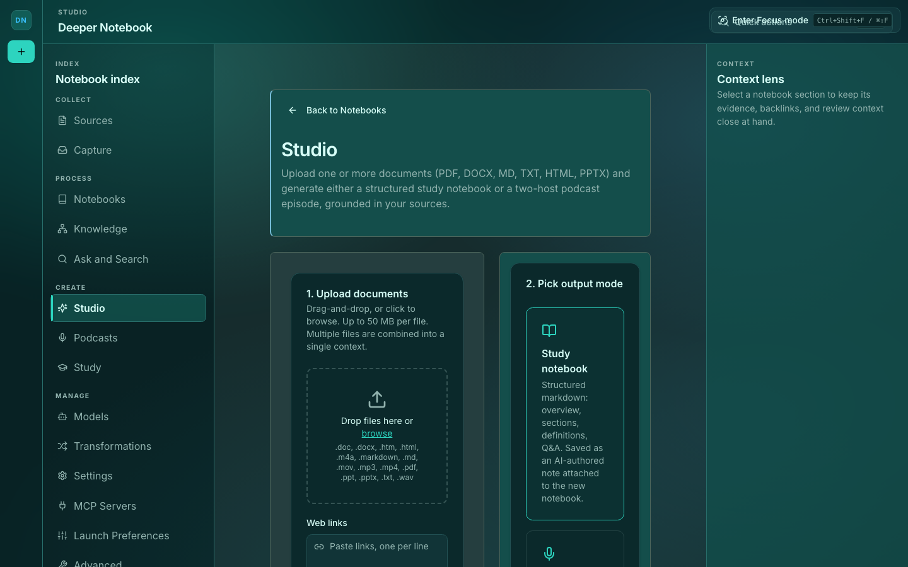
| Artifact | Good for |
|---|---|
| Report | A written answer with structure and citations |
| Study guide | Learning the material yourself |
| Course Pack | Teaching it — outcomes, modules, timed lessons, exercises, facilitator notes, handouts, knowledge checks, an assessment |
| Briefing | Getting someone else up to speed quickly |
| FAQ · Timeline · Data table | Reference material |
| Flashcards · Quiz | Feeding the Study workbench (§13) |
| Mind map | A structural overview |
| Slide deck | Presenting — exports an editable .pptx plus a PDF |
| Infographic | A single visual — exports a .png plus a one-page PDF |
| Podcast outline | Feeding the podcast studio (§12) |
| Research run | A recorded investigation with its evidence attached |
Artifacts save under your knowledge folder, in an evidence-studio directory, unless you
have configured a different export path. Slide decks and infographics write their visual files next to
the Markdown and JSON. All rendering happens locally — nothing is sent to a hosted office or image
service.
Pair a finished slide deck with a finished, timestamped audio overview and the app composes a
captioned 1920×1080 video locally, writing an .mp4 and a .vtt caption file.
It verifies the result before it offers it to you.
A multi-speaker audio conversation about your sources — with the outline under your control.
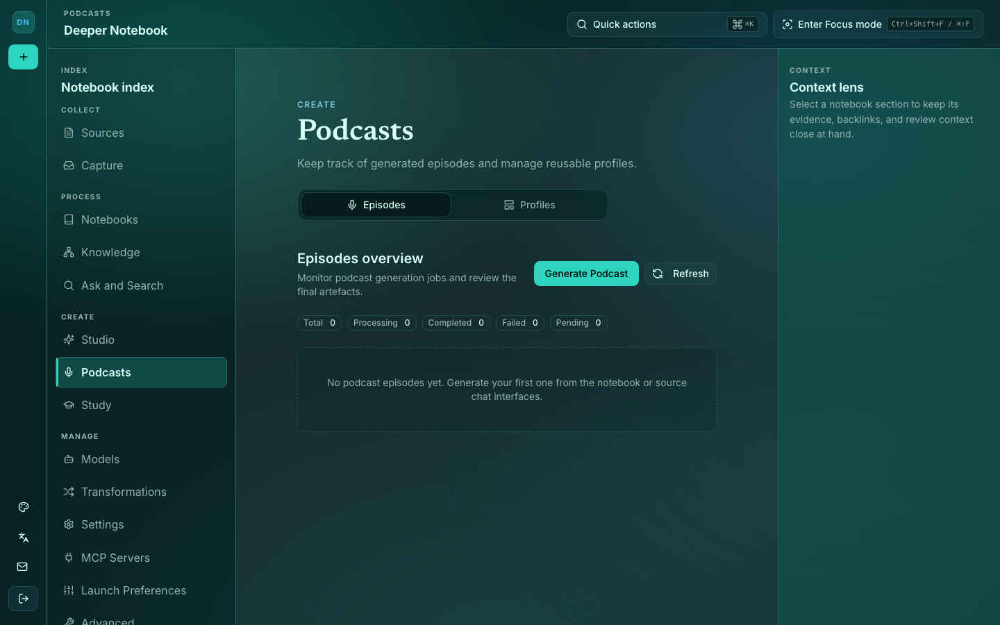
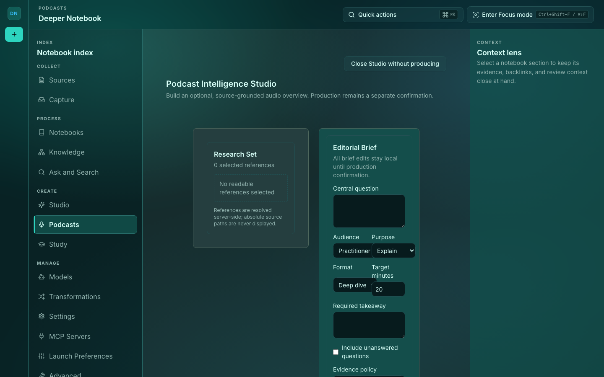
Generation runs through named stages with live progress: outline → transcript → audio → combining. A Cancel button is available throughout.
Your instructions are stored with the episode and replayed on retry, so a retry is not a blank slate. A completed episode can be regenerated with different settings without re-selecting the sources.
Selections that exceed the content budget are rejected at submit time rather than failing halfway through. If that happens, remove a source or use insights-only on your longest one.
Scheduled review, so what you collected stays learned.
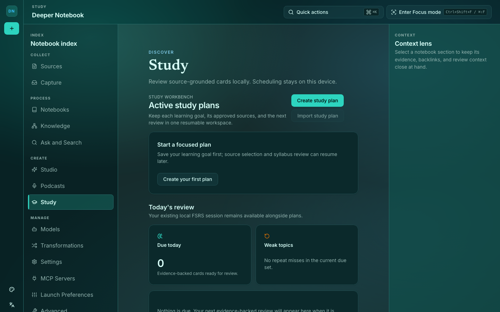
Study uses FSRS, a spaced-repetition scheduler. After each card you say how it went; FSRS models how quickly you forget that specific card and schedules it for the moment you are about to. Cards you find easy stretch out quickly. Cards you keep missing come back tomorrow.
The only thing you have to get right is honesty about how well you recalled it. Marking a card easy because you almost got it will push it out of reach.
.apkg).Export works the same way — your cards go back out as an Anki deck, so you are not locked in.
A plan is a scoped course through a notebook. Open a plan and the study assistant will help you work through it — restricted to that plan's sources. It will not answer from material outside the plan, even if that material is in the same notebook. That restriction is enforced on the retrieval side, not just requested in a prompt.
Generate a quiz in Studio (§11), then sit it as a timed exam from Study. Starting an attempt snapshots every question — so if you edit or regenerate the quiz while an attempt is in progress, your exam stays exactly as it was when you started. Grading needs no model call and works fully offline: your answers are compared against the snapshot the moment you submit.
A saved instruction you can run over any source, plus a way to make it better.
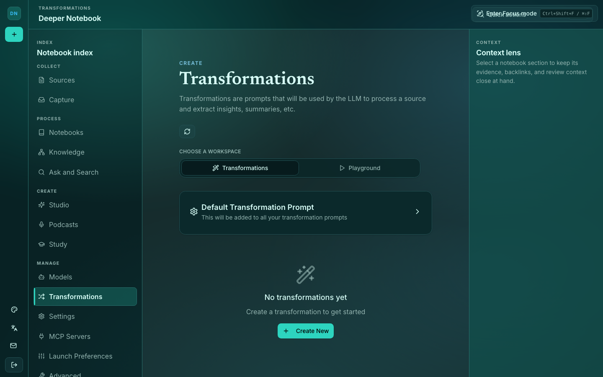
A transformation is a named prompt — "summarise for a sceptical reader", "extract every claim with a number in it", "list the methods and their sample sizes". Run it over a source and the output is saved as an insight on that source.
Cornell Notes ships as one of the built-in transformations: a cue column of recall questions, a note column of substance, and a summary at the bottom — the format students already know from class. It runs like any other transformation and is safe to edit or delete; it is only ever installed once, on first launch, and never overwrites a transformation you have changed.
Each transformation card has an Optimize action. It genuinely trains the prompt:
It can run entirely against your local model, so nothing leaves the machine.
A folder that becomes sources.
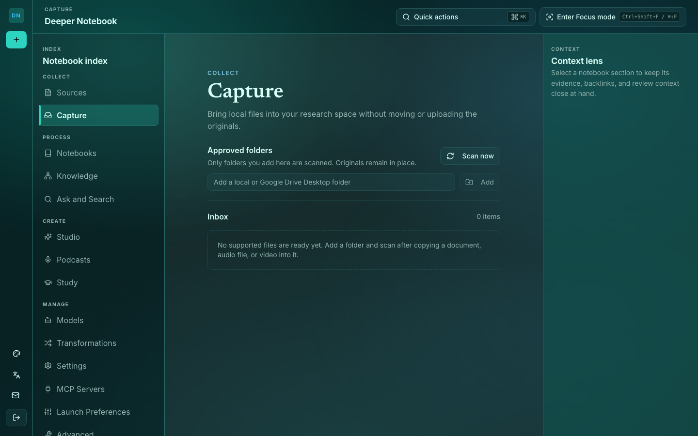
Nominate a folder as a capture root and the application watches it. Anything you drop in appears in the capture inbox, where you decide which notebook it belongs to before it becomes a source.
This is the right tool when material arrives faster than you can file it — scanned pages, downloads, recordings from a meeting. It keeps the arrival step and the filing step separate, so a busy week does not turn into an unusable notebook.
Diagnostics and the tools you reach for rarely.
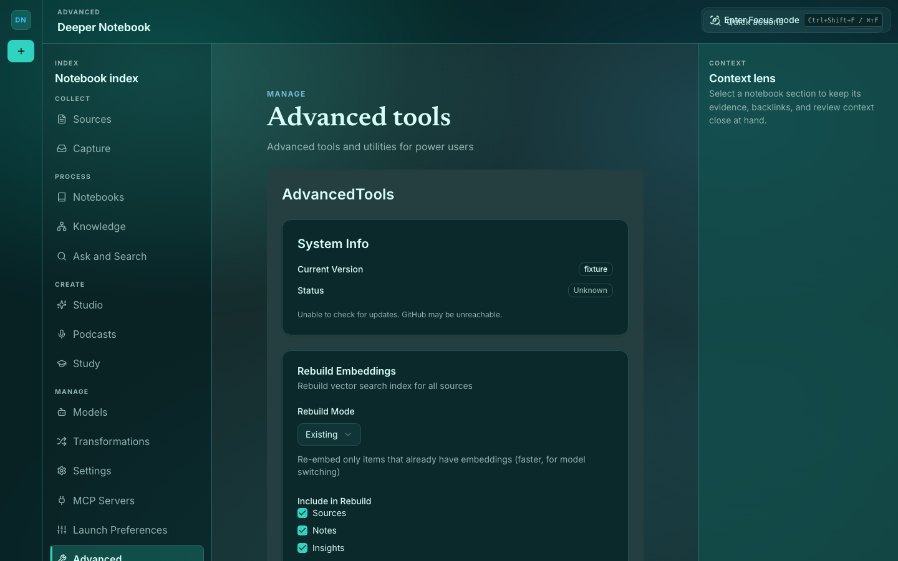
Advanced carries what you need when something is wrong or you are curious about the machinery: detailed runtime state per service, backup provenance, and maintenance actions. Nothing here is required for normal use. It is worth knowing it exists before you need it.
Where behaviour is decided.
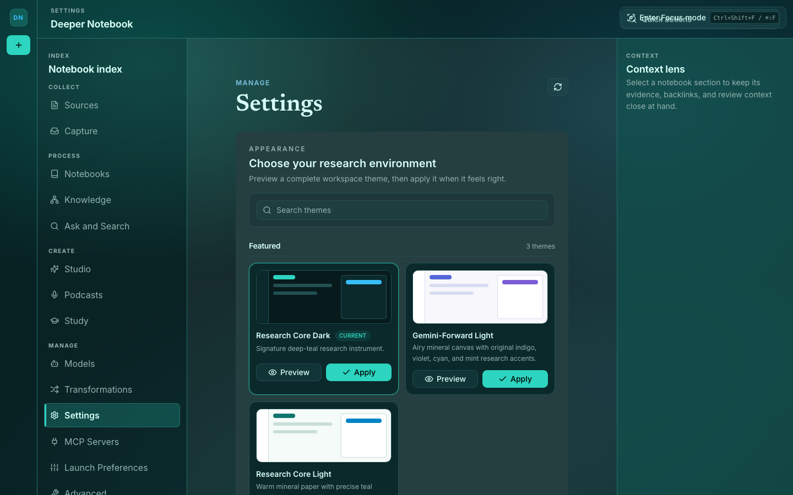
Choose which model does what: chat, embedding (the passage index), transcription, and speech. You can mix — a cloud model for chat and local models for everything else is a common and sensible setup.
The two enrichment switches described in §6, and extraction preferences.
| # | Provider | Key | Notes |
|---|---|---|---|
| 1 | Serper | Required | Paid, fast, broad |
| 2 | Tavily | Required | Paid, research-oriented |
| 3 | Brave | Required | Paid, independent index |
| 4 | SearXNG | None | Self-hosted; the app ships one you can run |
| 5 | Wikipedia | None | Always available — search works out of the box |
Each provider is tried in turn until one answers. You never have to configure search for it to work; adding a key makes it better.
With the privacy gate on, any turn containing detected secrets or personal information is kept on your local model rather than being sent to a cloud provider. When that happens you get an On-device badge and an explicit "Re-ask allowing cloud" action, so the decision stays yours and is never made silently.
Theme, and density — Comfortable by default, Compact if you want more on screen.
Optional, encrypted, and reversible.
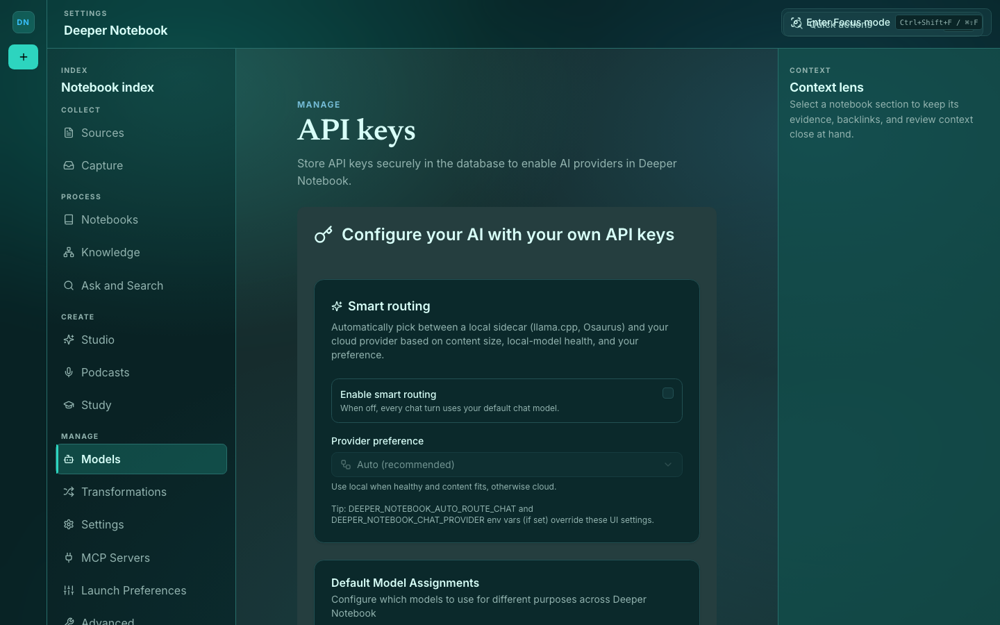
Cloud providers are opt-in. Adding a key here makes that provider's models available in the model picker; adding none is a fully supported configuration.
Supported: OpenAI, Anthropic, Google, Groq, Mistral, DeepSeek, and Ollama for models you run yourself. Search provider keys are configured here too.
Encrypted in the database using an encryption key that belongs to you. They are never written to a log file, never included in an error message, and never displayed back to you after you save them.
You can supply a new key alongside the old one and the application re-encrypts in place — you do not have to re-enter a dozen provider keys. That capability exists precisely because the alternative guarantees nobody ever rotates.
Delete the credential. Its models disappear from the picker. Nothing else changes — your notebooks, sources, and index are untouched, because they never depended on that provider.
The part that makes offline real.
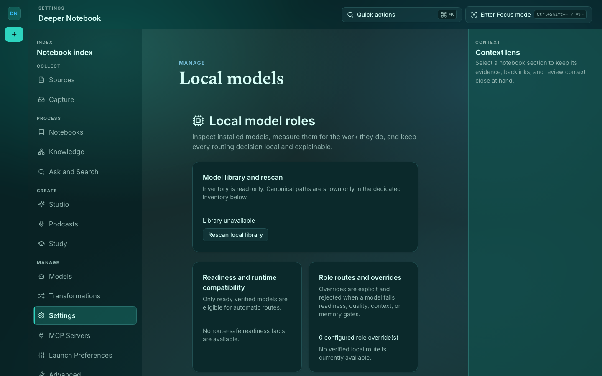
| Kind | How to add one | Notes |
|---|---|---|
| GGUF | Put a .gguf file in the GGUF model folder | Broadest compatibility; the bundled default |
| MLX | Put a complete MLX repository in the MLX model folder | Apple Silicon only; usually faster |
| Ollama | ollama pull <name> | Detected automatically if Ollama is running |
Files appear in the picker on the next launch. The GGUF Manager can download models for you and swap the active one without restarting.
Bigger models are better and slower, and a very large model loading from disk for the first time can take up to a minute. If chat feels sluggish, try a smaller model before assuming something is broken.
Give the assistant abilities the application does not ship with.
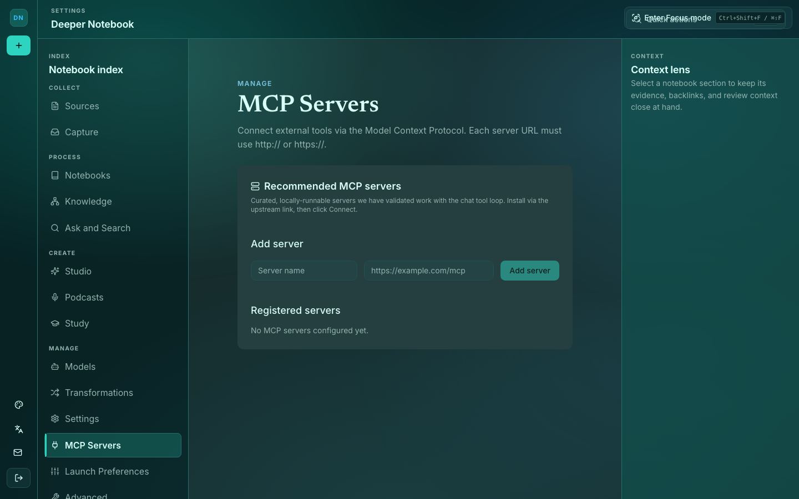
The Model Context Protocol is a standard way for a tool server to describe what it can do. Connect one here and its tools become available to chat, alongside the built-in ones.
If a server is unreachable, chat continues without its tools rather than failing. A broken integration costs you a capability, not a conversation.
What starts, and how.
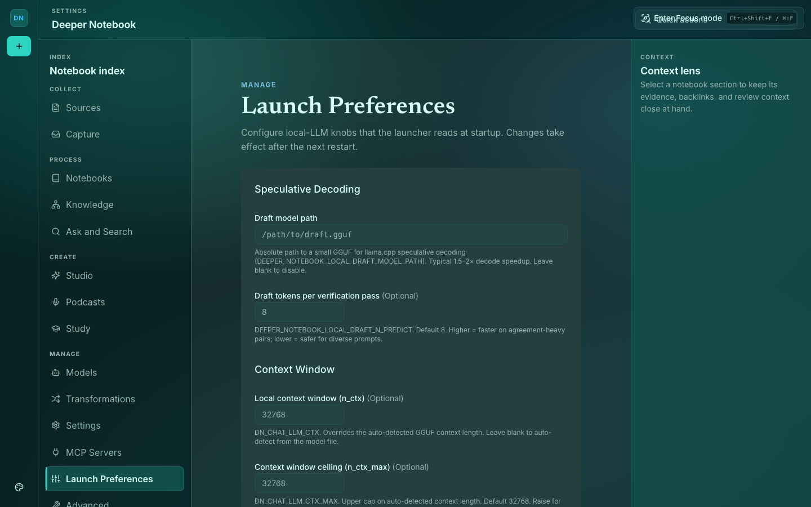
This screen controls the launcher rather than the application: which local model to load at startup, how patient to be with services that are slow to come up, and where the data folder lives.
Ports are chosen fresh at each launch, so there is nothing to configure and nothing to collide with.
Seventeen themes, all of them accessible.
Every theme meets WCAG AA or AAA contrast. These are not decoration — a high-contrast theme is the difference between usable and not for some readers, and the paper themes are noticeably easier for long reading sessions.
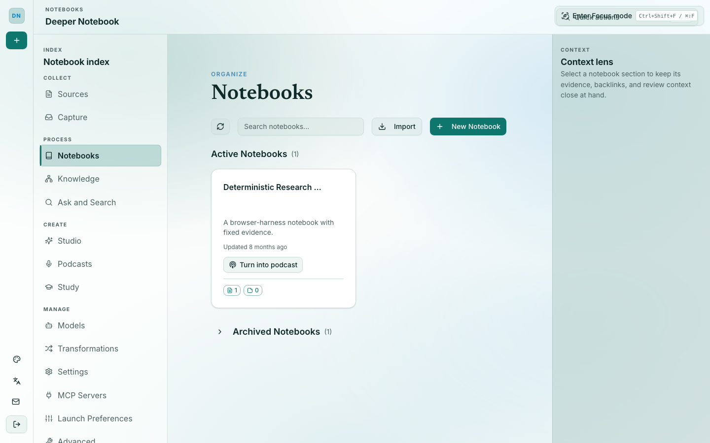
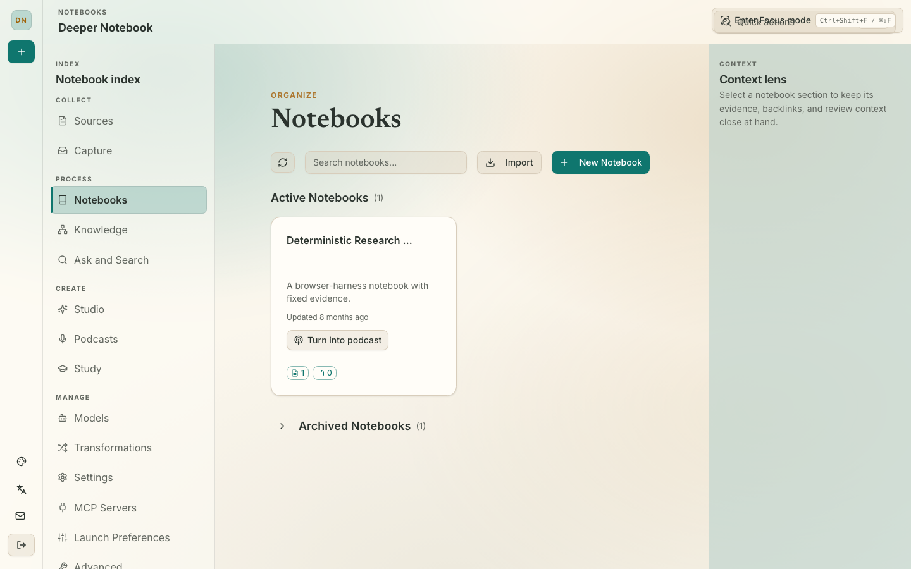
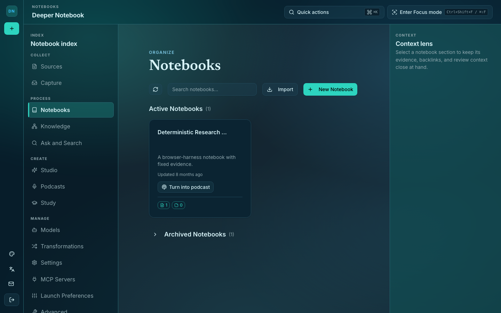
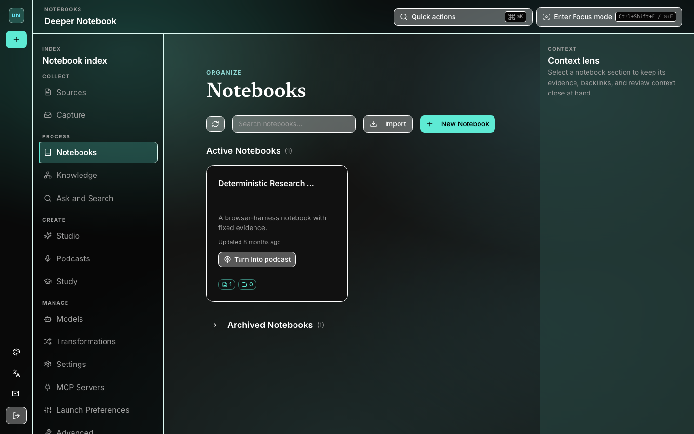
Comfortable is the default and gives text room to breathe. Compact tightens spacing so more fits on screen. The setting persists across launches.
Animation is limited to effects that do not move layout, and is disabled entirely if your system is set to reduce motion. You do not have to configure anything for that to take effect.
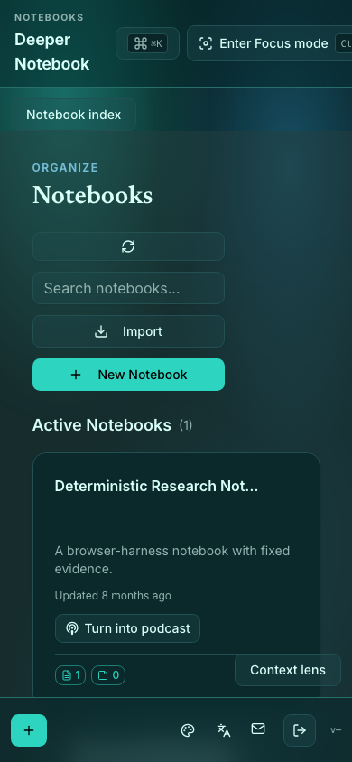
Not a degraded mode. The design centre.
With local models configured, everything below works with no network at all:
Only live web search and cloud models require a connection — and web search falls back to whatever providers are reachable.
A short and checkable list.
Every outbound address the application resolves is checked before it is used, and requests to your own machine's private network from a source URL or a model-directed fetch are refused.
Automatic, verified, and worth testing once.
The application exports your database on an interval and keeps a rolling set of recent exports. Each backup is written atomically — a backup interrupted halfway never replaces a good one — and carries a manifest of checksums so a corrupted file can be identified as corrupted rather than silently restored.
Verify a backup first, then restore it. Verification checks the contents against the manifest. If it fails, use an older backup — restoring a bad one is worse than being a day behind.
If the application is force-quit, the database can be left in a state that will not open. It detects this on the next launch, takes a backup first, and repairs. A Repair & restart button handles the relaunch for you.
Common symptoms, and the first thing to check.
| Symptom | Most likely cause | First move |
|---|---|---|
| A source is stuck on Processing | The indexing service is not running | Home → Runtime status. If it reads Degraded, check Settings → Local models |
| Chat says nothing is in context | Sources are set to Off, or none are Ready | Click "Using X of Y sources" above the input |
| Chat hangs, then errors | A cloud model with no connection | Switch on offline mode, or pick a local model |
| A model reads Degraded with no reason | It failed to start | Advanced → runtime detail shows the actual error from that service |
| Web search returns nothing | Every provider failed | Wikipedia needs no key and should always answer — if it does not, the machine has no network |
| The model cannot use tools | Small local models often cannot | Use a larger local model or a cloud model for that conversation |
| Podcast fails at submit | Selection exceeds the content budget | Remove a source, or set your longest to insights-only |
| Studio refuses to generate | A selected source is not Ready | The message names it — wait, then retry |
| The app will not open after an update | macOS access permission was reset | Right-click → Open, and re-approve the file-access prompt |
| Launch is very slow | A large model loading from disk | The startup timings panel shows which stage took the time |
| Window opens off-screen | A display was disconnected | Position is validated against attached displays and should self-correct on the next launch |
Every response carries a request identifier, and every log line is tagged with it. Including that identifier turns "chat failed sometimes" into a single traceable request.
| Shortcut | Does |
|---|---|
| ⌘K | Open Quick actions — jump to any notebook, source, or setting |
| ⌘⇧F / Ctrl+Shift+F | Toggle Focus mode |
| Esc | Close a dialog or leave Focus mode |
| Tab / ⇧Tab | Move through controls; dialogs trap focus and restore it on close |
| Enter | Send a chat message |
| ⇧Enter | New line without sending |
Every icon-only control carries an accessible label, so the whole application is navigable by keyboard and readable by a screen reader.
One folder. Know it, back it up, and never delete it.
Everything the application owns lives under a single folder in your home directory:
| Platform | Location |
|---|---|
| macOS and Linux | ~/.deeper-notebook/ |
| Windows | %USERPROFILE%\.deeper-notebook |
Inside it: the database, your uploaded files, conversation checkpoints, logs, backups, the private Python environment the app built for itself, and the startup receipt.
Install the application on the new machine, then restore a verified backup (§25). Do not copy the folder by hand — parts of it, including the private Python environment, are specific to the machine that built them.
docs/recreation/ — the full technical packet: eighteen documents
covering architecture, schema, API, security, performance, and build, written to be complete enough to
rebuild the project from.
Deeper Notebook · desktop 0.8.96 · 17 August 2026 · MIT licensed ·
a downstream fork of lfnovo/open-notebook